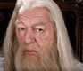
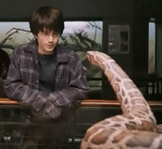
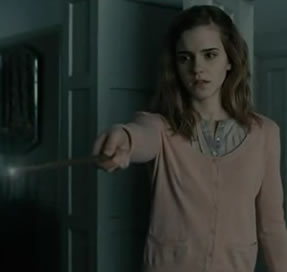
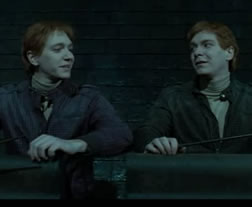
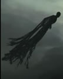
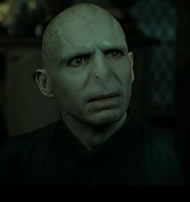

A escritora da saga afirmou que ele já se apaixonou por Grindewald, um bruxo das trevas que o próprio Dumbledore derrotou em 1945! Talvez por isso ele tenha conscedido os 10 pontos a Grifinória por Neville ter enfrentado os amigos em Harry Potter e a Câmara Secreta. J.K também disse que o motivo dela não ter dito que Dumbledore era gay, foi que ela não queria que ele tivesse caido na graça das pessoas, então ela mostrou o caráter o bruxo primeiro para depois fazer esta revelaçao.
Isso mesmo, J.K em u entrevista disse que Harry perdeu a capacidade de falar com as cobras, ou melhor, deixou de ser um ofidioglota, quando se permitiu ser morto por Voldemort com o feitiço Avada Kedavra na Floresta Proibida no último livro e filme da saga. Abandonando o estado de horcrux, Harry permitiu que a parte da alma de Voldemort fosse destruída, sendo ela que lhe permitia falar com as cobras. Apenas os herdeiros de Salazar Sonserina podiam falar com as cobras, Tom Riddle e sua mãe eram descendentes diretos do bruxo.
Anos depois da Segunda Guerra Bruxa, ela devolveu a memória aos pais. Hermione havia apagado a memória dos pais (em Harry Potter e as Relíquias da Morte nos livros, e Harry Potter e as Relíquias da Morte PT 1 nos filmes.) para poder protege-los de Lorde Voldemort, que na época estáva atacando famílias trouxas.
Depois da morte de Fred, seu irmão Jorge, nunca mais conseguiu conjurar com patrono. Lembrando que para conjurar p feitiço do patrono é nescessário lembrar de uma memória muito feliz, e todas as memórias de Jorge incluiam Fred. Más ainda fica pior! Após a guerra acabar, ao volta para casa Jorge destruiu todos os espelhos do local em um momento de fúria, pois toda vez que olhava ele via o seu refléxo e se lembrava de seu irmão.
J.K. entreou em depressão anos atrás, e escrever foi o que a salvou. "Os dementadores representam como eu me sentia." disse J.K. em uma entrevista. Más até uma depresão pôde inspirar essa incrível escritora.
Isso se dá pelo fato de sua mãe ter usado uma poção do amor para enfeitiçar um trouxa. E sempre que ele dava sinais de estar voltando ao normal ela dava outra dose para ele.
Isso desfaz totalmente o livro Harry Potter e a Criança Amaldiçoada, afinal como Voldemort iria ter um filho ? ele não sente amor, não poderia se apaixonar por uma mulher.
